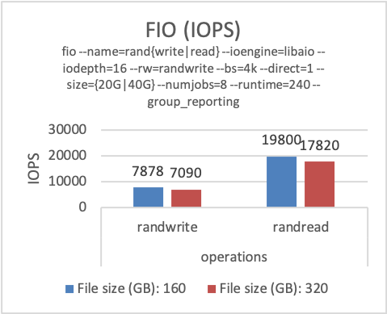

Lustre ($SCRATCH)¶

Introduction¶
The Lustre file system is an open-source, parallel file system that supports many requirements of leadership class HPC simulation environments.
It is available as a global high-performance file system on all ULHPC computational systems through a DDN ExaScaler system.
It is meant to host temporary scratch data within your jobs. In terms of raw storage capacities, it represents more than 1.6PB.
Scratch directory (${SCRATCH})¶
The scratch area is a Lustre-based file system that provides high performance temporary storage of large files and is accessible across all cluster nodes. Use scratch to store working files and temporary large data files.
- The scratch file system is not fully redundant, so do not use scratch to store files that cannot be recreated. For instance store only simulation output that can be recalculated.
Small file and random I/O
The scratch is best used to write large files in a continuous manner. Even though the Lustre file system can handle small file and random I/O better that our GPFS system, it still slows down considerably as the number of I/O operations increases. Typical example of operations with a lot random and small file I/O operations in the parallel compilation of large projects.
Prefer the locally mounted file system in /tmp for small file and random I/O.
Origin of the term scratch
The term scratch originates from scratch data tapes. People uses scratch tapes to write and read data that did not fit into the main memory, and since it was a tape, it could only perform continuous I/O. The term scratch is a bit abused in modern times as most storage systems nowadays support random access. In the case of the lustre system in UL HPC, the terms scratch serves as a reminder that the file system is best used for contiguous I/O, even though it supports random access quite well.
The environment variable ${SCRATCH} (which expands to /scratch/users/$(whoami)) points to a users scratch directory. The absolute path may change, but the value of ${SCRATCH} will always be correct.
ULHPC $SCRATCH quotas and backup
Extended ACLs are provided for sharing data with other users using fine-grained control. See quotas for detailed information about inode, space quotas, and file system policies. In particular, your SCRATCH directory is NOT backuped according to the policy detailed in the ULHPC backup policies.
A short history of Lustre
Lustre was initiated & funded by the U.S. Department of Energy Office of Science & National Nuclear Security Administration laboratories in mid 2000s. Developments continue through the Cluster File Systems (ClusterFS) company founded in 2001. Sun Microsystems acquired ClusterFS in 2007 with the intent to bring Lustre technologies to Sun's ZFS file system and the Solaris operating system. In 2010, Oracle bought Sun and began to manage and release Lustre, however the company was not known for HPC. In December 2010, Oracle announced that they would cease Lustre 2.x development and place Lustre 1.8 into maintenance-only support, creating uncertainty around the future development of the file system. Following this announcement, several new organizations sprang up to provide support and development in an open community development model, including Whamcloud, Open Scalable File Systems (OpenSFS, a nonprofit organization promoting the Lustre file system to ensure Lustre remains vendor-neutral, open, and free), Xyratex or DDN. By the end of 2010, most Lustre developers had left Oracle.
WhamCloud was bought by Intel in 2011 and Xyratex took over the Lustre trade mark, logo, related assets (support) from Oracle. In June 2018, the Lustre team and assets were acquired from Intel by DDN. DDN organized the new acquisition as an independent division, reviving the Whamcloud name for the new division.
General Architecture¶
A Lustre file system has three major functional units:
- One or more MetaData Servers (MDS) nodes (here two) that have one or more MetaData Target (MDT) devices per Lustre filesystem that stores namespace metadata, such as filenames, directories, access permissions, and file layout. The MDT data is stored in a local disk filesystem. However, unlike block-based distributed filesystems, such as GPFS/SpectrumScale and PanFS, where the metadata server controls all of the block allocation, the Lustre metadata server is only involved in pathname and permission checks, and is not involved in any file I/O operations, avoiding I/O scalability bottlenecks on the metadata server.
- One or more Object Storage Server (OSS) nodes that store file data on one or more Object Storage Target (OST) devices.
- The capacity of a Lustre file system is the sum of the capacities provided by the OSTs.
- OSSs do most of the work and thus require as much RAM as possible
- Rule of thumb: ~2 GB base memory + 1 GB / OST
- Failover configurations: ~2 GB / OST
- OSSs should have as much CPUs as possible, but it is not as much critical as on MDS
- Client(s) that access and use the data. Lustre presents all clients with a unified namespace for all of the files and data in the filesystem, using standard POSIX semantics, and allows concurrent and coherent read and write access to the files in the filesystem.
Lustre general features and numbers
Lustre brings a modern architecture within an Object based file system with the following features:
- Adaptable: supports wide range of networks and storage hardware
- Scalable: Distributed file object handling for 100.000 clients and more
- Stability: production-quality stability and failover
- Modular: interfaces for easy adaption
- Highly Available: no single point of failure when configured with HA software
- BIG and exapandable: allow for multiple PB in one namespace
- Open-source and community driven.
Lustre provides a POSIX compliant layer supported on most Linux flavours. In terms of raw number capabilities for the Lustre:
- Max system size: about 64PB
- Max number of OSTs: 8150
- Max number of MDTs: multiple per filesystem supported since Lustre 2.4
- Files per directory: 25 Millions (**don't run
ls -al) - Max stripes: 2000 since Lustre 2.2
- Stripe size: Min 64kB -- Max 2TB
- Max object size: 16TB(
ldiskfs) 256PB (ZFS) - Max file size: 31.35PB (
ldiskfs) 8EB (ZFS)
When to use Lustre?
- Lustre is optimized for:
- Large files
- Sequential throughput
- Parallel applications writing to different parts of a file
- Lustre will not perform well for
- Lots of small files
- High number of meta data requests, improved on new versions
- Waste of space on the OSTs
Storage System Implementation¶
The way the ULHPC Lustre file system is implemented is depicted on the below figure.

Acquired as part of RFP 170035, the ULHPC configuration is based upon:
- a set of 2x EXAScaler Lustre building blocks that each consist of:
- 1x DDN SS7700 base enclosure and its controller pair with 4x FDR ports
- 1x DDN SS8460 disk expansion enclosure (84-slot drive enclosures)
- OSTs: 160x SEAGATE disks (7.2K RPM HDD, 8TB, Self Encrypted Disks (SED))
- configured over 16 RAID6 (8+2) pools and extra disks in spare pools
- MDTs: 18x HGST disks (10K RPM HDD, 1.8TB, Self Encrypted Disks (SED))
- configured over 8 RAID1 pools and extra disks in spare pools
- Two redundant MDS servers
- Dell R630, 2x Intel Xeon E5-2667v4 @ 3.20GHz [8c], 128GB RAM
- Two redundant OSS servers
- Dell R630XL, 2x Intel Xeon E5-2640v4 @ 2.40GHz [10c], 128GB RAM
| Criteria | Value |
|---|---|
| Power (nominal) | 6.8 KW |
| Power (idle) | 5.5 KW |
| Weight | 432 kg |
| Rack Height | 22U |
LNet is configured to be performed with OST based balancing.
Filesystem Performance¶
The performance of the ULHPC Lustre filesystem is expected to be in the range of at least 15GB/s for large sequential read and writes.
IOR¶
Upon release of the system, performance measurement by IOR, a synthetic benchmark for testing the performance of distributed filesystems, was run for an increasing number of clients as well as with 1kiB, 4kiB, 1MiB and 4MiB transfer sizes.

As can be seen, aggregated writes and reads exceed 15 GB/s (depending on the test) which meets the minimum requirement.
FIO¶
Random IOPS benchmark was performed using FIO with 20 and 40 GB file size over 8 jobs, leading to the following total size of 160GB and 320 GB
- 320 GB is > 2\times RAM size of the OSS node (128 GB RAM)
- 160 GB is > 1\times RAM size of the OSS node (128 GB RAM)

MDTEST¶
Mdtest (based on the 7c0ec41 on September 11 , 2017 (based on v1.9.3)) was used to benchmark the metadata capabilities of the delivered system.
HT was turned on to be able to run 32 threads.

Mind the logarithmic Y-Axis. Tests on 4 clients with up to 20 threads have been included as well to show the scalability of the system.
Lustre Usage¶
Understanding Lustre I/O¶
When a client (a compute node from your job) needs to create or access a file, the client queries the metadata server (MDS) and the metadata target (MDT) for the layout and location of the file's stripes. Once the file is opened and the client obtains the striping information, the MDS is no longer involved in the file I/O process. The client interacts directly with the object storage servers (OSSes) and OSTs to perform I/O operations such as locking, disk allocation, storage, and retrieval.
If multiple clients try to read and write the same part of a file at the same time, the Lustre distributed lock manager enforces coherency, so that all clients see consistent results.
Discover MDTs and OSTs¶
ULHPC's Lustre file systems look and act like a single logical storage, but a large files on Lustre can be divided into multiple chunks (stripes) and stored across over OSTs. This technique is called file striping. The stripes are distributed among the OSTs in a round-robin fashion to ensure load balancing. It is thus important to know the number of OST on your running system.
As mentioned in the Lustre implementation section, the ULHPC Lustre infrastructure is composed of 2 MDS servers (2 MDT), 2 OSS servers and 16 OSTs.
You can list the MDTs and OSTs with the command lfs df:
$ cds # OR: cd $SCRATCH
$ lfs df -h
UUID bytes Used Available Use% Mounted on
lscratch-MDT0000_UUID 3.2T 15.4G 3.1T 1% /mnt/lscratch[MDT:0]
lscratch-MDT0001_UUID 3.2T 3.8G 3.2T 1% /mnt/lscratch[MDT:1]
lscratch-OST0000_UUID 57.4T 16.7T 40.2T 30% /mnt/lscratch[OST:0]
lscratch-OST0001_UUID 57.4T 18.8T 38.0T 34% /mnt/lscratch[OST:1]
lscratch-OST0002_UUID 57.4T 17.6T 39.3T 31% /mnt/lscratch[OST:2]
lscratch-OST0003_UUID 57.4T 16.6T 40.3T 30% /mnt/lscratch[OST:3]
lscratch-OST0004_UUID 57.4T 16.5T 40.3T 30% /mnt/lscratch[OST:4]
lscratch-OST0005_UUID 57.4T 16.5T 40.3T 30% /mnt/lscratch[OST:5]
lscratch-OST0006_UUID 57.4T 16.3T 40.6T 29% /mnt/lscratch[OST:6]
lscratch-OST0007_UUID 57.4T 17.0T 39.9T 30% /mnt/lscratch[OST:7]
lscratch-OST0008_UUID 57.4T 16.8T 40.0T 30% /mnt/lscratch[OST:8]
lscratch-OST0009_UUID 57.4T 13.2T 43.6T 24% /mnt/lscratch[OST:9]
lscratch-OST000a_UUID 57.4T 13.2T 43.7T 24% /mnt/lscratch[OST:10]
lscratch-OST000b_UUID 57.4T 13.3T 43.6T 24% /mnt/lscratch[OST:11]
lscratch-OST000c_UUID 57.4T 14.0T 42.8T 25% /mnt/lscratch[OST:12]
lscratch-OST000d_UUID 57.4T 13.9T 43.0T 25% /mnt/lscratch[OST:13]
lscratch-OST000e_UUID 57.4T 14.4T 42.5T 26% /mnt/lscratch[OST:14]
lscratch-OST000f_UUID 57.4T 12.9T 43.9T 23% /mnt/lscratch[OST:15]
filesystem_summary: 919.0T 247.8T 662.0T 28% /mnt/lscratch
File striping¶
File striping permits to increase the throughput of operations by taking advantage of several OSSs and OSTs, by allowing one or more clients to read/write different parts of the same file in parallel. On the other hand, striping small files can decrease the performance.
File striping allows file sizes larger than a single OST, large files MUST be striped over several OSTs in order to avoid filling a single OST and harming the performance for all users. There is default stripe configuration for ULHPC Lustre filesystems (see below). However, users can set the following stripe parameters for their own directories or files to get optimum I/O performance. You can tune file striping using 3 properties:
| Property | Effect | Default | Accepted values | Advised values |
|---|---|---|---|---|
| stripe_size | Size of the file stripes in bytes | 1048576 (1m) | > 0 | > 0 |
| stripe_count | Number of OST to stripe across | 1 | -1 (use all the OSTs), 1-16 | -1 |
| stripe_offset | Index of the OST where the first stripe of files will be written | -1 (automatic) | -1, 0-15 | -1 |
Note: With regards stripe_offset (the index of the OST where the first stripe is to be placed); the default is -1 which results in random selection and using a non-default value is NOT recommended.
Note
Setting stripe size and stripe count correctly for your needs may significantly affect the I/O performance.
- Use the
lfs getstripecommand for getting the stripe parameters. - Use
lfs setstripefor setting the stripe parameters to get optimal I/O performance. The correct stripe setting depends on your needs and file access patterns.- Newly created files and directories will inherit these parameters from their parent directory. However, the parameters cannot be changed on an existing file.
$ lfs getstripe dir|filename
$ lfs setstripe -s <stripe_size> -c <stripe_count> -o <stripe_offset> dir|filename
usage: lfs setstripe -d <directory> (to delete default striping from an existing directory)
usage: lfs setstripe [--stripe-count|-c <stripe_count>]
[--stripe-index|-i <start_ost_idx>]
[--stripe-size|-S <stripe_size>] <directory|filename>
Example:
$ lfs getstripe $SCRATCH
/scratch/users/<login>/
stripe_count: 1 stripe_size: 1048576 stripe_offset: -1
[...]
$ lfs setstripe -c -1 $SCRATCH
$ lfs getstripe $SCRATCH
/scratch/users/<login>/
stripe_count: -1 stripe_size: 1048576 pattern: raid0 stripe_offset: -1
In this example, we view the current stripe setting of the $SCRATCH directory. The stripe count is changed to all OSTs and verified.
All files written to this directory will be striped over the maximum number of OSTs (16).
Use lfs check osts to see the number and status of active OSTs for each filesystem on the cluster. Learn more by reading the man page:
$ lfs check osts
$ man lfs
File stripping Examples¶
- Set the striping parameters for a directory containing only small files (< 20MB)
$ cd $SCRATCH
$ mkdir test_small_files
$ lfs getstripe test_small_files
test_small_files
stripe_count: 1 stripe_size: 1048576 stripe_offset: -1 pool:
$ lfs setstripe --stripe-size 1M --stripe-count 1 test_small_files
$ lfs getstripe test_small_files
test_small_files
stripe_count: 1 stripe_size: 1048576 stripe_offset: -1
- Set the striping parameters for a directory containing only large files between 100MB and 1GB
$ mkdir test_large_files
$ lfs setstripe --stripe-size 2M --stripe-count 2 test_large_files
$ lfs getstripe test_large_files
test_large_files
stripe_count: 2 stripe_size: 2097152 stripe_offset: -1
- Set the striping parameters for a directory containing files larger than 1GB
$ mkdir test_larger_files
$ lfs setstripe --stripe-size 4M --stripe-count 6 test_larger_files
$ lfs getstripe test_larger_files
test_larger_files
stripe_count: 6 stripe_size: 4194304 stripe_offset: -1
Big Data files management on Lustre
Using a large stripe size can improve performance when accessing very large files
Large stripe size allows each client to have exclusive access to its own part of a file. However, it can be counterproductive in some cases if it does not match your I/O pattern. The choice of stripe size has no effect on a single-stripe file.
Note that these are simple examples, the optimal settings defer depending on the application (concurrent threads accessing the same file, size of each write operation, etc).
Lustre Best practices¶
Parallel I/O on the same file
Increase the stripe_count for parallel I/O to the same file.
When multiple processes are writing blocks of data to the same file in parallel, the I/O performance for large files will improve when the stripe_count is set to a larger value. The stripe count sets the number of OSTs to which the file will be written. By default, the stripe count is set to 1. While this default setting provides for efficient access of metadata (for example to support the ls -l command), large files should use stripe counts of greater than 1. This will increase the aggregate I/O bandwidth by using multiple OSTs in parallel instead of just one. A rule of thumb is to use a stripe count approximately equal to the number of gigabytes in the file.
Another good practice is to make the stripe count be an integral factor of the number of processes performing the write in parallel, so that you achieve load balance among the OSTs. For example, set the stripe count to 16 instead of 15 when you have 64 processes performing the writes. For more details, you can read the following external resources: